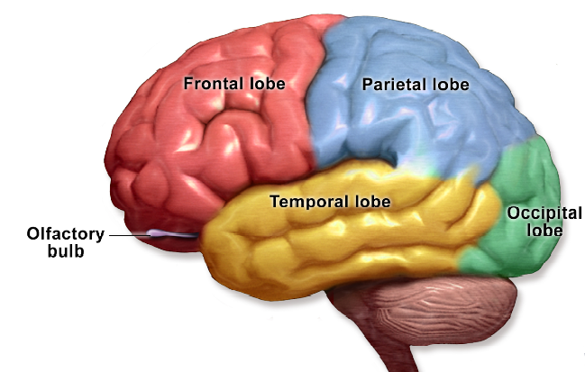

Introduction
I'm sure that many of you have read or seen Alice in Wonderland, but did you know that there was a syndrome named after this book and movie? One of the main reasons that this syndrome is called Alice in Wonderland(AIW) is because Alice, the main protagonist in the book and movie, experiences similar situations that occur with the symptoms of this syndrome.
What may be the main cause of this syndrome?
There are some links between migraines and Epstein-Barr virus infections, but the accurate cause is currently unknown.
Background
To understand the full grasp of Alice in wonderland syndrome we must go back to the past and learn what the syndrome really is. Alice in Wonderland syndrome is a rare neurological disorder characterized by distortions of visual perception, body image, and the experience of time. Dr. John Todd, the founder of the syndrome, connects these symptoms with derealization and depersonalization.
Causes
The cause of AIW syndrome is still unknown. Most often the syndrome is underdiagnosis or misdiagnosed. For example, the syndrome itself is so rare that many of the top experts may never encounter it in their careers. Despite this, there is no precise figure pertaining to how many people suffer from this syndrome. There have been no epidemiological studies done on AIW syndrome to date. The main problem is the lack of diagnosis because there is no valid guideline that they have to follow and often many of the patients prefer not to inform the doctors about their conditions or hallucinations. This is primarily because the patients often recognize it as a mental illness.
Symptoms
Oftentimes the symptoms associated with AIW syndrome are similar to migraines. Many of the symptoms that are associated with this syndrome are Micropsia(where objects appear too small), Macropsia (where objects appear too big), Metamorphopsia(where aspects of shapes, such as height and width, appear inaccurate), Pelopsia (where objects appear too close), and Closeteleopsia (where objects appear farther away than they are). Oftentimes along with these, there are other symptoms such as migraine episodes, feverish symptoms, and epileptic seizures that affect only parts of the brain.
Treatment
There is no permanent treatment as of now, but much of the treatment depends on the cause. If migraines are the cause then doctors can try to prescribe some migraine medication. If the cause of the syndrome is seizures then doctors will prescribe seizure-based medication to lessen the symptoms but not permanently cure. Even though there is no cure yet, medication related to the causation of AIW helps reduce symptoms. If you experience any symptoms it is best to consult the doctor and get tested by an MRI and CT scan.
Conclusion
AIW syndrome is a neural disorder that can alter the visual perception of someone. This syndrome is rare but through the publicity of this article, I hope you will be able to share and help your loved ones get the help they require.
References
[1] Millar, Helen. “Alice in Wonderland Syndrome: Definition, Symptoms, and Treatment.” Medical News Today, MediLexicon International, 23 June 2020, www.medicalnewstoday.com/articles/alice-in-wonderland-syndrome#seeing-a-doctor.
[2] Naarden, Tirza, “Alice in Wonderland Syndrome as a Presenting Manifestation of Creutzfeldt-Jakob Disease.” Frontiers, Frontiers, 1 Jan. 1AD, https://www.frontiersin.org/articles/10.3389/fneur.2019.00473/full#:~:text=the%20Field%20Statement-,Alice%20in%20Wonderland%20syndrome%20(AIWS)%20is%20a%20rare%20neurological%20disorder,the%20syndrome's%20numerous%20other%20symptoms.
[3] Weissenstein, Anne, et al. “Alice in Wonderland Syndrome: A Rare Neurological Manifestation with Microscopy in a 6-Year-Old Child.” Journal of Pediatric Neurosciences, Medknow Publications & Media Pvt Ltd, 9 Sept. 2014, https://www.ncbi.nlm.nih.gov/pmc/articles/PMC4302569/#:~:text=The%20causes%20for%20AIWS%20are,has%20no%20proven%2C%20effective%20treatment.
[4] Upham, Becky, “All about Alice in Wonderland Syndrome.” EverydayHealth.com, Becky Upham, 12 Feb. 2021, https://www.everydayhealth.com/migraine/interesting-facts-about-alice-in-wonderland-syndrome/.